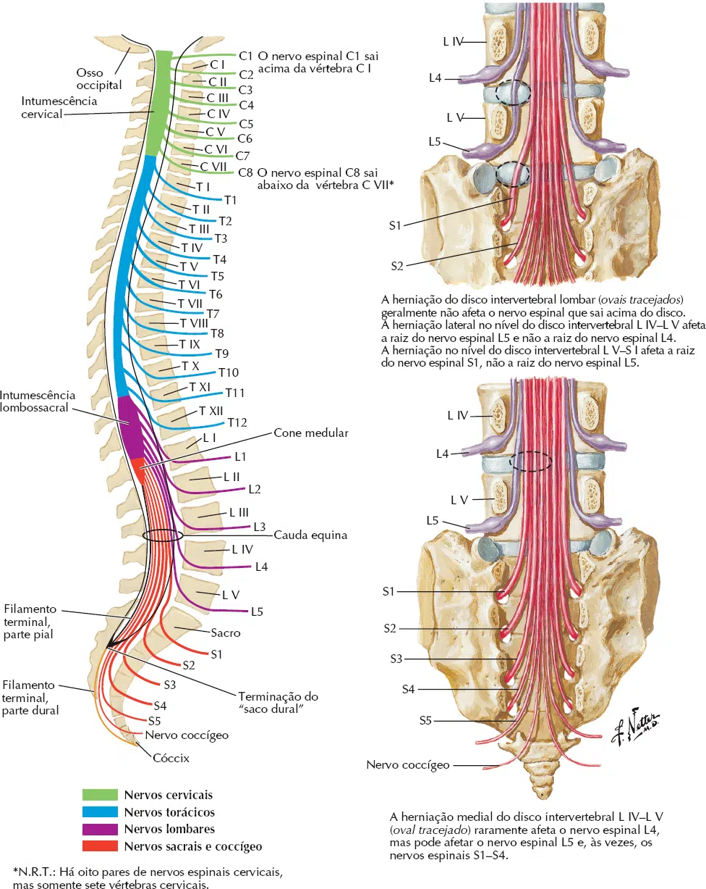
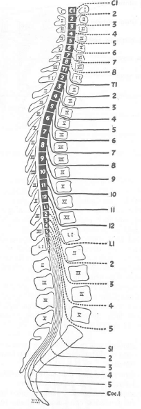
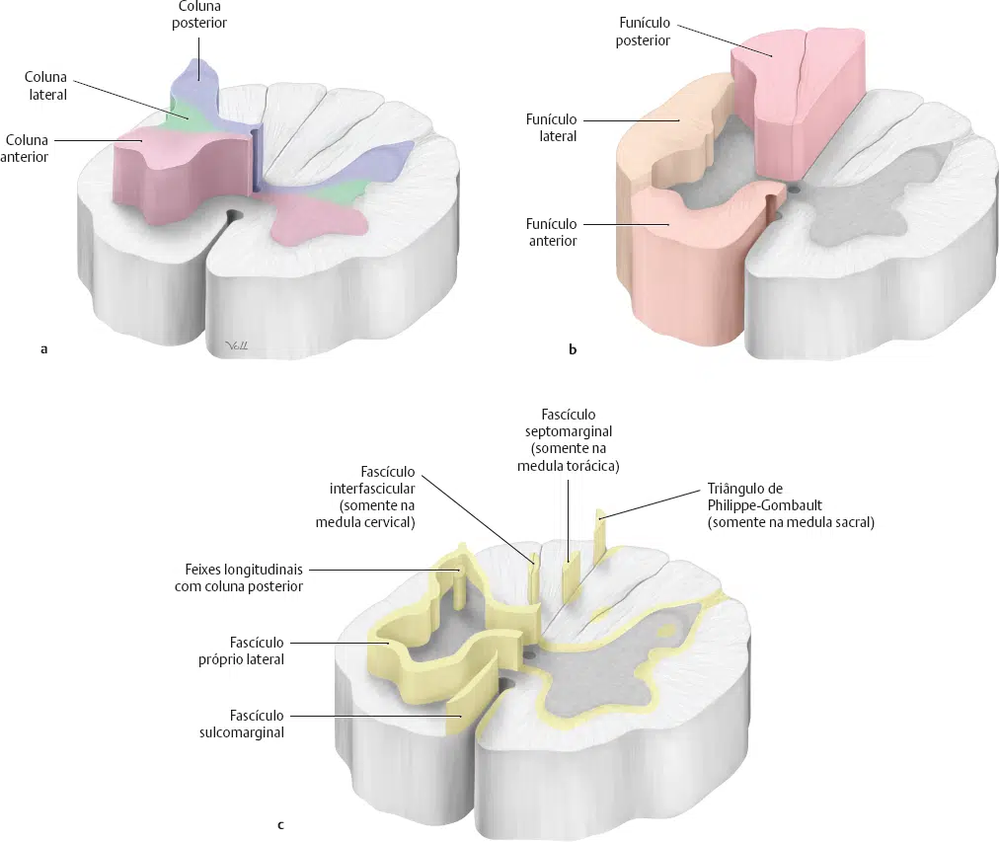

A medula espinal é a parte do tubo neural que sofreu menos alterações durante o desenvolvimento.
A medula ocupa parcialmente o canal vertebral, terminando em uma porção cônica, o cone medular, na altura de LI nos adultos (variações anatômicas podem ocorrer, e o término pode ser em TXII ou LIII).
No recém nascido, a medula espinal se estende até a altura do disco intervertebral LII-LIII.
Seu início é abaixo do bulbo, na altura do forame magno.
Sua forma é cilíndrica, achatada ântero-posteriormente.
Em duas regiões, a medula espinal apresenta dilatações.
Sendo na região cervical (entre os segmentos LII e SIII), dilatação denominada de intumescência cervical e; na região lombossacral (entre os segmentos CIV e TI), denominada de intumescência lombossacral.
As intumescências contêm um maior número de neurônios, destinados a inervação dos membros.
Segmentos medulares
A medula espinal apresenta 31 segmentos, em cada um dos segmentos se origina um par de nervos espinais.
A divisão dos segmentos para cada região da medula espinal é:
8 segmentos cervicais: o primeiro par de nervos espinais emerge entre o osso occipital e a margem superior do atlas, desta forma entre as vértebras CVII e TI está localizado o oitavo par de nervos cervicais.
12 segmentos torácicos: que originam 12 pares de nervos espinais torácicos, que emergem nos forames intervertebrais, inferiormente a sua vértebra correspondente.
5 segmentos lombares: que originam cinco pares de nervos espinais lombares, que emergem nos forames intervertebrais, inferiormente a sua vértebra correspondente.
5 segmentos sacrais: que originam cinco pares de nervos espinais sacrais.
1 segmento coccígeo:que origina um par de nervos espinais coccígeo.

Topografia vertebromedular
A medula espinal não tem o mesmo tamanho que a coluna vertebral, desta forma, seus segmentos não são totalmente correspondentes com as regiões da coluna vertebral.
A diferença de tamanho da medula espinal em relação à coluna vertebral influencia na emergência dos nervos espinais.
Os nervos espinais mais superiores (cervicais e torácicos altos) apresentam emergência da medula em um plano quase que perpendicular, enquanto que, os nervos mais inferiores (torácicos baixos, lombares, sacrais e coccígeos) emergem obliquamente.
Os nervos lombares, sacrais e coccígeos formam a cauda equina, dentro do revestimento meníngeo.
Na região cervical os segmentos da medula espinal são praticamente correspondentes as vértebras cervicais.
Na região torácica os segmentos medulares estão localizados dois níveis acima em relação as vértebras (exemplo: segmento medular T6 está na altura da vértebra TIV), desta forma os segmentos medulares T11 e T12 estão na altura das vértebras TIX e TX.
Os segmentos lombares da coluna vertebral estão localizados na altura de TXII e TXII.
Os segmentos sacrais e coccígeos na altura de LI.

Disposição de substância branca e cinzenta na medula espinal
Na medula espinal a substância branca está localizada externamente, enquanto que, a substância cinzenta é interna.
A substância branca é constituída por fibras nervosas mielínicas que possuem direção ascendente ou descendente.
Está separada por funículos, pelos sulcos da superfície da medula.
Nos funículos encontramos os principais tratos ou fascículos (vias) de condução de estímulos:
Funículo anterior: localizado entre a fissura mediana anterior e o sulco ântero-lateral.
Tratos ou fascículos: trato espinotalâmico anterior (via para o tato protopático e pressão); trato corticospinal anterior (via motora, não cruzada na decussão das pirâmides); trato tetospinal (movimento reflexos da cabeça por estímulos visuais); trato reticulospinal anterior (relacionado com movimentos posturais); trato vestibulospinal anterior (controle sobre a musculatura para a manutenção do equilíbrio).
Funículo lateral: localizado entre os sulcos ântero-lateral e póstero-lateral.
Tratos ou fascículos: trato espinotalâmico lateral (temperatura e dor); tratos espinocerebelares anterior e posterior (propriocepção inconsciente); trato corticospinal lateral (via motora, cruzada na decussação das pirâmides); trato reticulospinal lateral (relacionado com movimentos posturais e marcha); trato rubrospinal (controle dos músculos distais).
Funículo posterior: localizado entre os sulcos póstero-lateral e mediano
Esse funículo é subdividido pelo sulco e septo intermédio posterior em duas áreas, fascículo grácil (medialmente), e o fascículo cuneiforme (lateralmente).
O fascículo grácil (do latim gracilis – delgado) estende-se por toda a medula espinal, carregando informações proprioceptivas conscientes e tato epicrítico dos membros inferiores e metade inferior do tronco.
O fascículo cuneiforme (do latim cuneos – cunha, e formis – forma de) se forma na região torácica alta, seguindo para a região cervical da medula.
Conduz estímulos proprioceptivos conscientes e tato epicrítico da parte superior do tronco e membros superiores.
A substância cinzenta da medula é constituída por corpos de neurônios, fibras nervosas amielínicas e células gliais.
Apresenta a forma da letra H, a parte transversal do H é denominado de coluna intermédia, enquanto que, as barras do H são as colunas anteriores e posteriores.
As colunas anteriores e posteriores são encontradas em todos os segmentos da medula espinal, as primeiras são motoras e, as segundas sensitivas.
Nas regiões torácica e lombar alta é encontrada a coluna lateral (contém neurônios pré-ganglionares simpáticos).
Coluna anterior: apresenta um grande número de neurônios das regiões cervical e lombossacral, nessas regiões as colunas anteriores apresentam dois grupos de neurônios, o grupo medial (para os músculos proximais dos membros), e o grupo lateral (para os músculos distais dos membros).
Na região torácica, as colunas anteriores apresentam um único agrupamento de neurônio (medialmente), para os músculos axiais.
Coluna posterior: recebe estímulos sensitivos. As diferentes categorias sensitivas alcançam a coluna posterior em pontos determinados.
No ápice da coluna posterior as aferências são do trato espinotalâmico, para a modulação de dor (área conhecida como substância gelatinosa).
Coluna lateral: localiza nas regiões torácica e lombar alta.
Formada pelos corpos celulares dos neurônios pré-ganglionares simpáticos.

Revestimento da medula espinal
A medula espinal é revestida pelas meninges espinais.
A meninge que está em contato direto com a medula espinal é a pia-máter, essa meninge forma no término da medula espinal um prolongamento, denominado de filamento terminal.
As outras meninges são a dura-máter (externa) e a aracnóide-máter (entre a dura-máter e pia-máter).
A dura-máter e a aracnóide-máter se projetam mais inferiormente em relação à medula espinal.
A medula espinal termina na altura de LI, enquanto que, a dura-máter e aracnóide-máter se estendem até a altura de SII, formando o saco dural.
O filamento terminal desce dentro do saco dural, na altura de SII se incorpora a dura-máter, formando o ligamento coccígeo da medula espinal.
Entre o canal vertebral e a dura-máter encontramos o espaço epidural, preenchido por gordura e vasos sanguíneos.
Entre a dura-máter e a aracnóide-máter está o espaço subdural (de tamanho capilar, contendo uma pequena quantidade de líquido cerebrospinal).
Entre a aracnóide-máter e a pia-máter localizamos o espaço subaracnóideo, que contem uma quantidade considerável de líquido cerebrospinal (que pode ser aspirado para o exame do líquor).